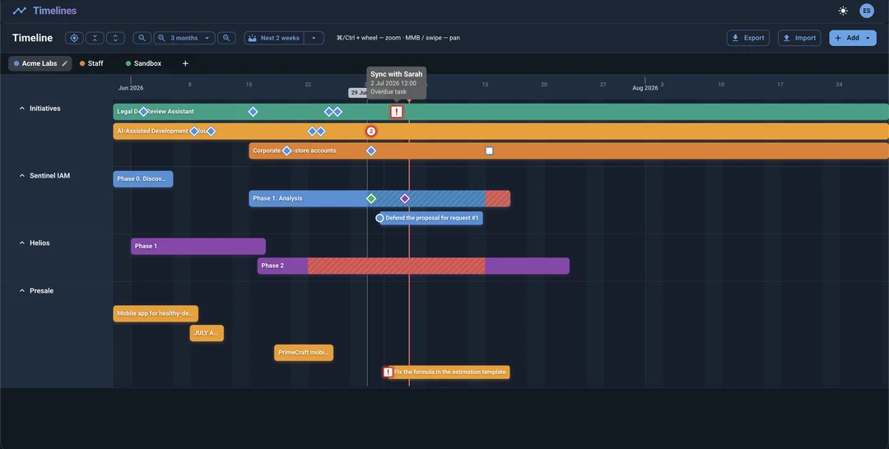

## Product Hunt Launch Checklist
-•
todoTODO Finalize tagline copy
-•
todoTODO Record demo video
-•
doneDONE Set up launch page
-•
todoTODO Line up 5 hunters
-•
todoTODO Prep FAQ responses
*•
Launch date target: mid-July.
